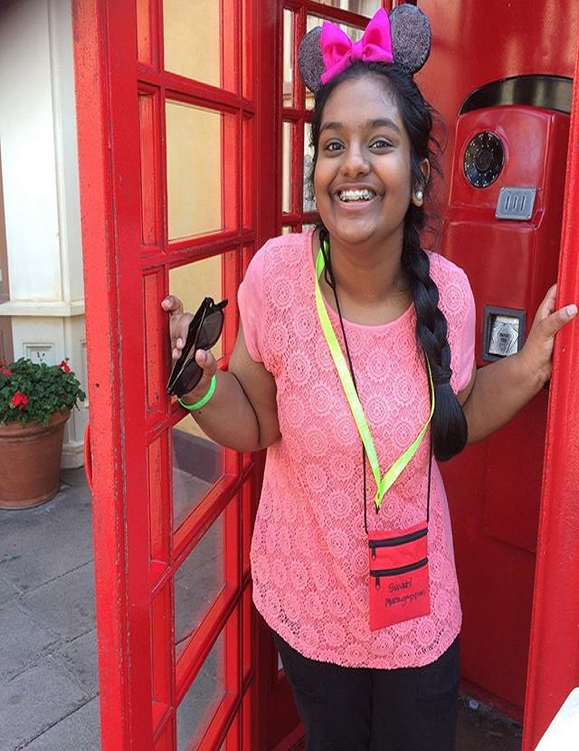

Nathaly Jose-Maria

Swati Murugappan

Edith Sanchez

Jayasri Mankan
Nathaly is a rising junior at Alpharetta High School and a prospective technology major.
She enjoys music and playing the violin along with gaming and volunteering.
Nathaly joined this program because she has been interested in technology since a very young age and simply wanted to expand on the small amount of knowledge she already had on a complex topic.
Swati is a rising junior at Pope High School who enjoys writing poetry and short stories, playing the violin, and trying new recipes.
She decided to join this program in order to broaden her horizons and incorporate her STEM interests with her artistic ones.
Girls Who Code has offered Swati an unforgettable, empowering experience that she will always be grateful for.
She wants to thank her teacher, Ms. Katie, and TAs, Mariana and Olivia, who have helped her throughout this journey!
Edith is a rising junior at Cristo Rey Atlanta Jesuit High School who enjoys helping people.
She also enjoys watching Youtube videos and watching new shows on Netflix.
Jayasri Mankan is also a rising junior, and attends South Forsyth High School.
In her free time, she annoys her sister, reads, watches too many movies, and enjoys kicking people's butts with some taekwondo.
She was interested in the Girls Who Code Summer Immersion Program as she wanted to learn how to make personalized interactive websites and apps.
Jayasri will treasure the Girls Who Code experience and memories she made with her fellow sisters, TA’s, and teacher, who have helped her grow.
{kind=link}
{kind=link}
{kind=link}
{kind=link}